Relações entre camadas moleculares nos mesmos pacientes · gerado em 22/10/2026 03:25
Principais resultados
PanCan x GDC: correlação mediana por paciente de 0.939 em 12.865 genes; por gene, 0.92.
CNV x mRNA: mediana ρ=0.08 em 16.988 pares; 10391 com FDR < 5% (8003 no sentido esperado).
Metilação x mRNA: mediana ρ=-0.06 em 11.637 pares; 8264 com FDR < 5% (5282 no sentido esperado).
ATAC x mRNA: mediana ρ=0.14 em 27.285 pares; 108 com FDR < 5% (103 no sentido esperado).
RPPA x mRNA: mediana ρ=0.17 em 158 pares; 106 com FDR < 5% (101 no sentido esperado).
miRNA x mRNA: 0,0% dos pares têm ρ < −0,5.
Agrupamento integrado de 341 pacientes em 2 grupos (silhueta 0.13); sobrevida diferente entre grupos com log-rank p=0.83.
RNA-seq PanCan x contagens brutas do GDC
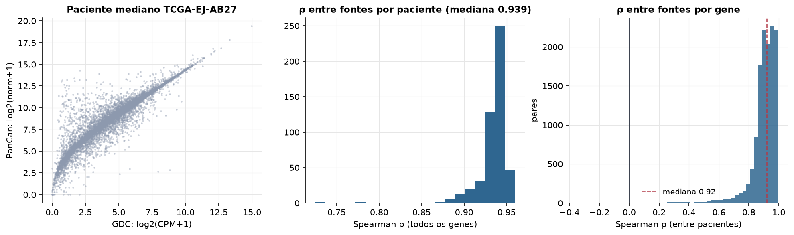
Como ler: a mesma amostra quantificada pelo PanCanAtlas (RSEM, hg19, corrigido por lote) e pelo GDC (STAR, hg38, contagem bruta em log-CPM). Correlação alta por paciente indica que as duas fontes medem o mesmo perfil; correlação baixa por gene aparece em genes pouco expressos ou com anotação diferente entre GENCODE v36 e o RSEM antigo.
Efeitos em cis sobre a expressão
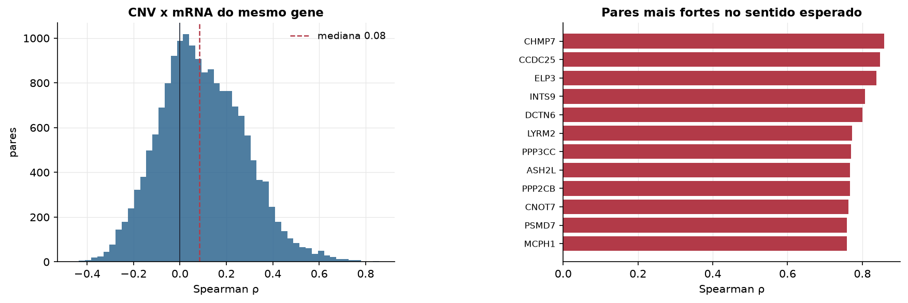
Como ler: para cada gene, a correlação entre número de cópias e expressão nos mesmos pacientes. Ganhos que aumentam a expressão (efeito de dosagem) deslocam a distribuição para a direita. Mediana ρ = 0.08; 10391 de 16988 pares com FDR < 5% (n mediano = 488 pacientes).
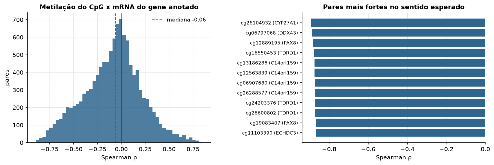
Como ler: cada par é um CpG variável e o gene anotado a ele. Metilação de promotor costuma silenciar o gene (ρ negativo); no corpo do gene a relação pode ser positiva. Mediana ρ = -0.06; 8264 de 11637 pares com FDR < 5% (n mediano = 494 pacientes).
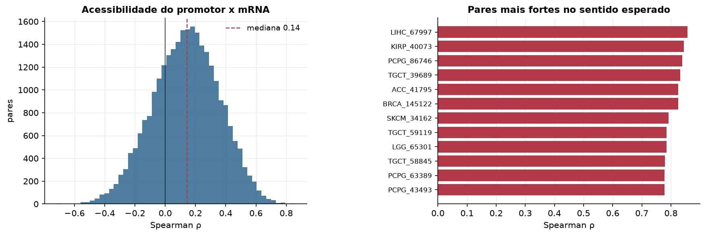
Como ler: promotores mais abertos (mais sinal de ATAC) tendem a ter genes mais expressos (ρ positivo). Mediana ρ = 0.14; 108 de 27285 pares com FDR < 5% (n mediano = 26 pacientes).
Do mRNA à proteína
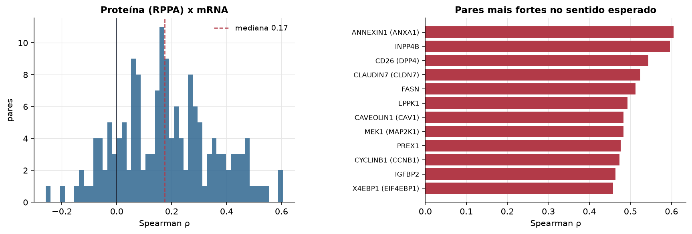
Como ler: 193 anticorpos de proteína total ligados ao gene correspondente. Correlação mRNA-proteína costuma ser moderada (mediana ~0,3-0,5) por regulação pós-transcricional. Mediana ρ = 0.17; 106 de 158 pares com FDR < 5% (n mediano = 350 pacientes).
miRNA x mRNA
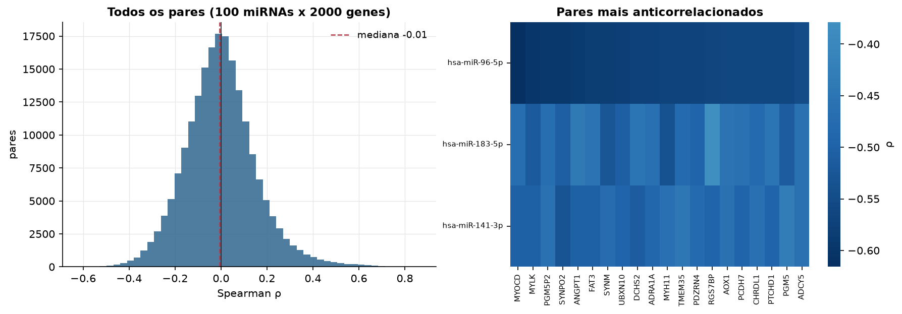
Como ler: miRNAs reprimem seus alvos, então pares com ρ negativo forte são candidatos a interação miRNA-alvo (confirme em bases como miRTarBase/TargetScan). Com poucos pacientes, correlações extremas aparecem por acaso.
Pares miRNA-gene mais negativos
miRNA
gene
rho
hsa-miR-96-5p
MYOCD
-0.616
hsa-miR-96-5p
MYLK
-0.6
hsa-miR-96-5p
PGM5P2
-0.594
hsa-miR-96-5p
SYNPO2
-0.593
hsa-miR-96-5p
ANGPT1
-0.587
hsa-miR-96-5p
FAT3
-0.585
hsa-miR-96-5p
SYNM
-0.584
hsa-miR-96-5p
UBXN10
-0.578
hsa-miR-96-5p
DCHS2
-0.577
hsa-miR-96-5p
ADRA1A
-0.576
hsa-miR-96-5p
MYH11
-0.571
hsa-miR-96-5p
TMEM35
-0.57
hsa-miR-96-5p
PDZRN4
-0.57
hsa-miR-96-5p
RGS7BP
-0.565
hsa-miR-96-5p
AOX1
-0.563
Mutação e expressão do próprio gene
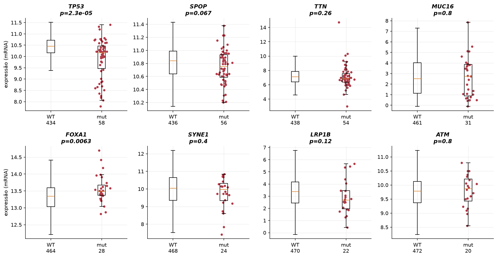
Como ler: expressão do gene em tumores com e sem mutação não silenciosa nele. Mutações truncantes (nonsense, frameshift) costumam reduzir a expressão por decaimento do mRNA (NMD); mutações ativadoras costumam não mudar a expressão.
Métricas de amostra cruzadas
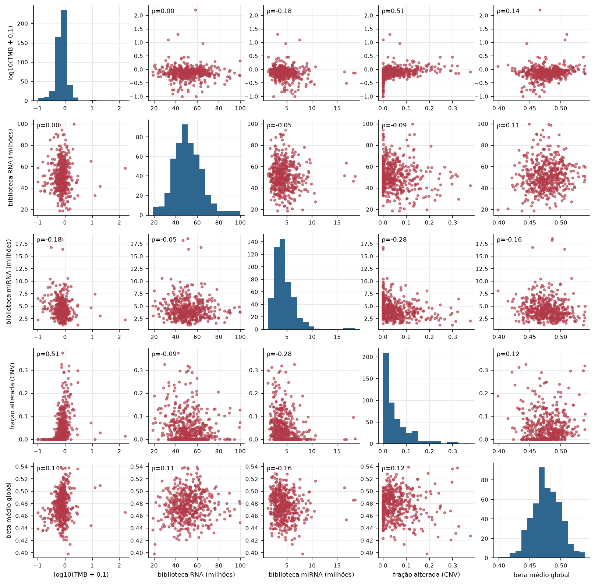
Como ler: relação entre métricas resumidas de cada tumor (carga mutacional, fração do genoma alterada, metilação global, tamanho de biblioteca). ρ de Spearman no canto.
Integração: as ômicas contam a mesma história?
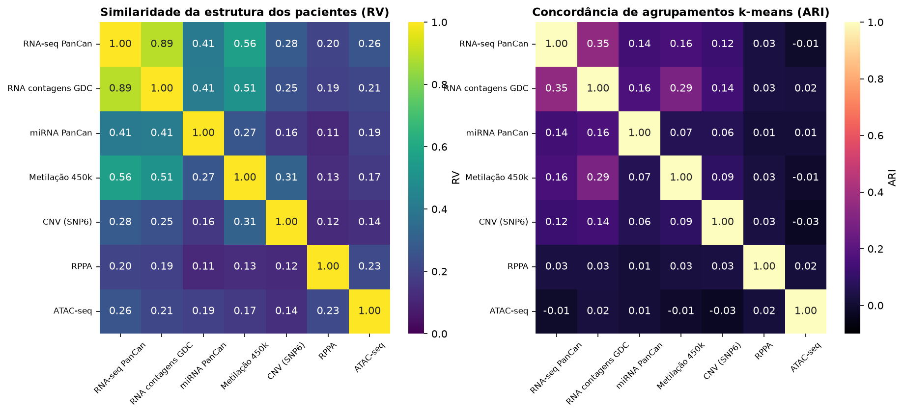
Como ler: à esquerda, o coeficiente RV compara as matrizes de distância entre pacientes de duas ômicas (1 = mesma estrutura, 0 = sem relação), usando os 10 primeiros componentes de cada uma. À direita, o quanto os agrupamentos k-means de cada ômica coincidem (0 = acaso). Ômicas com RV alto trazem informação redundante; RV baixo indica informação complementar, que é o que a integração multiômica aproveita.
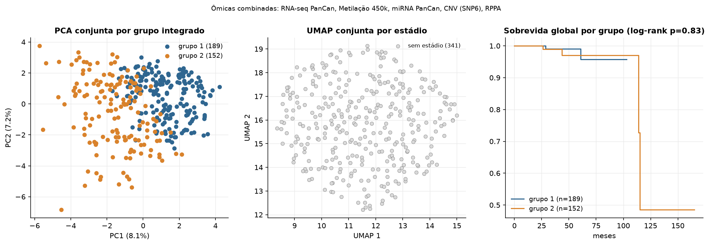
Como ler: 341 pacientes com todas estas ômicas: RNA-seq PanCan, Metilação 450k, miRNA PanCan, CNV (SNP6), RPPA. Cada ômica foi resumida em 10 componentes e ponderada para pesar igual (estilo MFA). O k-means escolheu 2 grupos pela silhueta (0.13). À direita, a sobrevida de cada grupo. É um ponto de partida exploratório para o seu modelo, não um resultado final.
Qual ômica se associa à clínica?
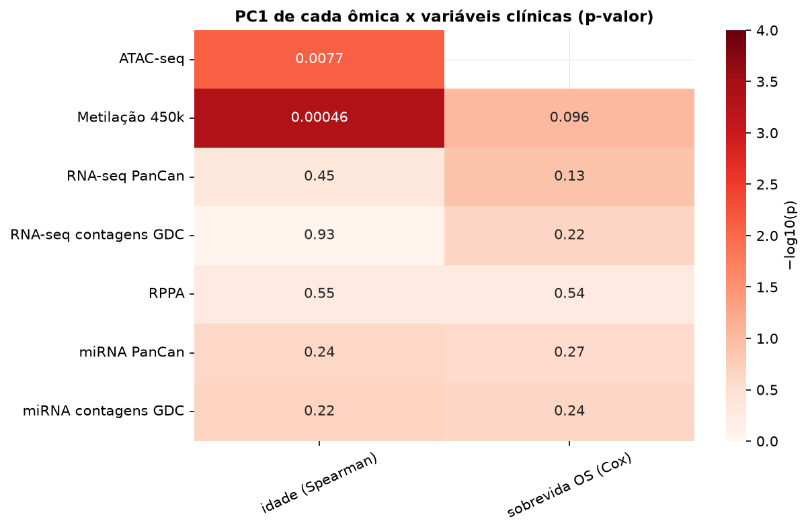
Como ler: p-valores da associação do primeiro componente principal de cada ômica (só tumores) com estádio, sexo, idade e sobrevida global. Quanto mais escuro, mais forte a associação.